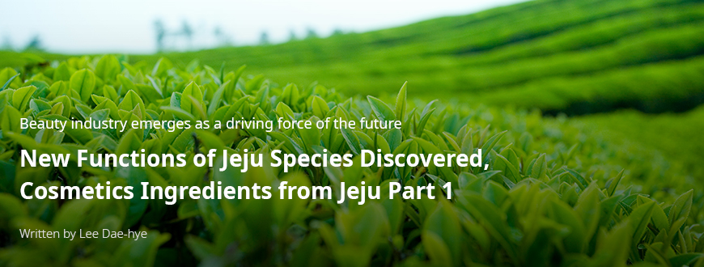
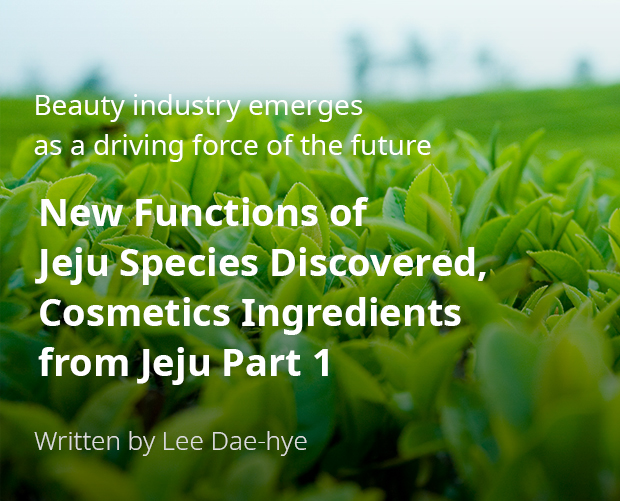
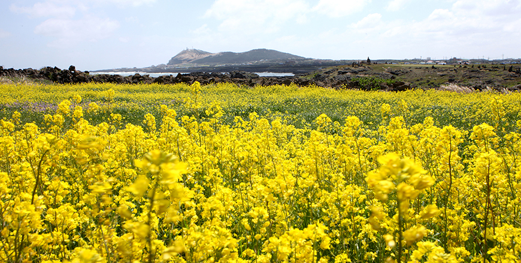
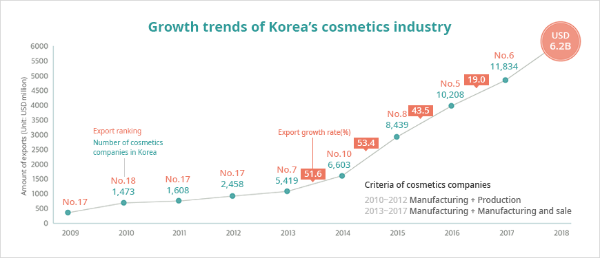
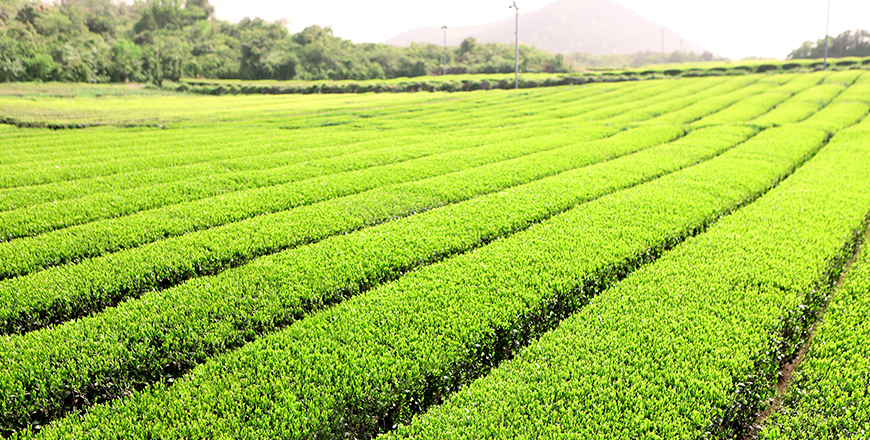
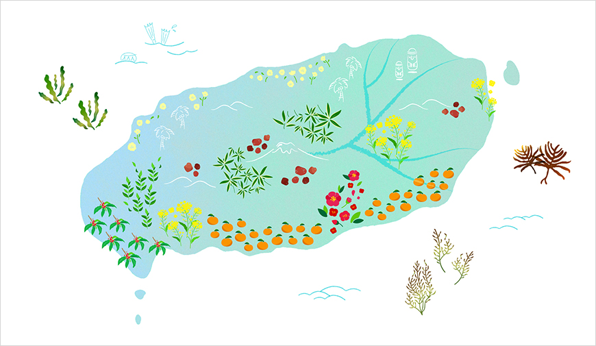
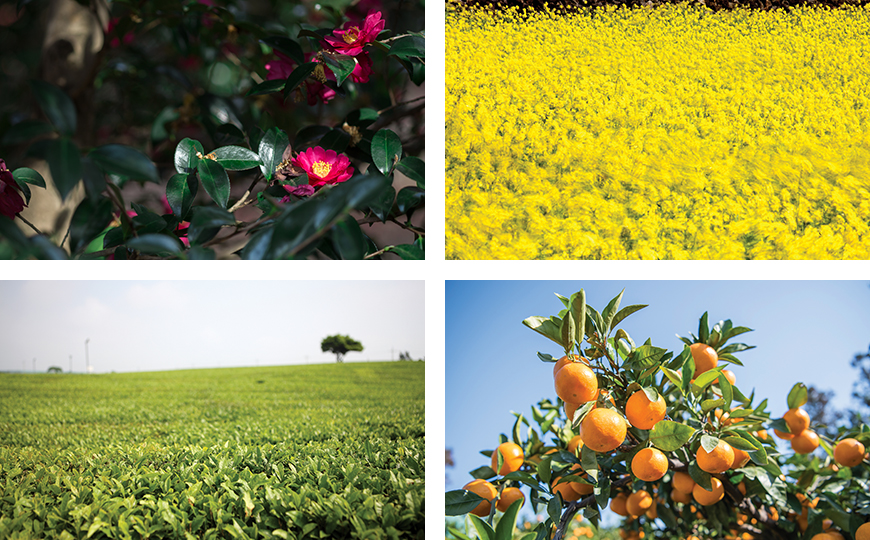

기획취재콘텐츠
- Home
- 제주라이프
- 기획취재콘텐츠
Cosmetics Ingredients from Jeju Part 1새로운 글



Jeju Island, a bio-reserve area designated by UNESCO, is known as a home to over 9,000 species. The life rising from the earth formed by volcanic eruptions is a part of Jeju’s beautiful natural environment and has been gaining attention as key source for strategic industries of the future. The Jeju cosmetics ingredient industry will be the foundation of a Korean cosmetics industry that is loved across the world.

New challenges arise with the emergence of K-beauty
The Korean cosmetics industry, based on outstanding technologies and a stable manufacturing ecosystem, boasts unrivaled popularity and business scale, as K-beauty brands sweep across the world along with the Korean wave. Korea is home to the world’s first and second largest ODM and OEM manufacturers—Kolmar Korea and Cosmax—and the high-quality cosmetic products appeal to consumers around the world. Two leading Korean cosmetics companies—Amore Pacific (no. 12) and LG Household and Health Care (no. 17)—have been listed among the top 100 cosmetics brands designated by WWD, a US-based fashion magazine. In addition, road-shop brands such as Missha and The Face Shop have entered the global market and are targeting consumers worldwide in the niche market. For the past twenty years, the domestic cosmetics market has grown by approximately 10% on average every year, and by 2017 Korea’s cosmetics industry had become the 8th largest in the world.



※ Source: Combined by KOTRA (KOTRA, Ministry of Health and Welfare, Ministry of Food and Drug Safety), Korea Health Industry Development Institute, Global Trade Atlas(2018. 06)
The Korean cosmetics industry has maintained a trend of growth over the last decade.
In addition to the growth of the domestic market, the cosmetics industry has broken export records every year. A 2019 Cosmetics Industry Analysis Report released by the Korea Health Industry Development Institute showed that the value of exports of cosmetics products in 2018 reached USD 6.27 billion, up 26.5% YoY. Compared to USD 219.01 million in 2004, the value had increased more than thirty-fold over fourteen years. As the quality and awareness of K-beauty products have increased, the area of the export market has continuously expanded beyond the Greater China Region to include the Americas and Europe. The Korean cosmetics industry turned a profit for the first time in 2013 and has shown an annual average growth rate of 40% ever since. Cosmetics was designated as one of nine areas from Korea innovating the world in 2017, together with other major Korean export items such as semiconductors and automobiles.
Along with the growth of the Korean cosmetics industry, the cosmetics ingredient market has also been gaining attention. As most ingredients currently used in Korean cosmetics products are imported, cosmetics brands have been challenged to find domestic cosmetics ingredients. Consumers have also become smarter. They no longer choose products simply by seeing a brand image, but rather they carefully check every single ingredient contained in a product before making a purchase. It is inevitable that cosmetics ingredients should be upgraded as cosmetics products including natural ingredients have become increasingly popular. Furthermore, the aging society and air pollution (environmental pollution) have resulted in an expanded functional cosmetics market that values ingredients.
Species rooted in Jeju’s natural environment have proven their excellence as cosmetics ingredients
Cosmetics ingredients from Jeju first grabbed attention in 2008 when Innisfree, one of Amore Pacific’s cosmetics brand lines, launched a Jeju Green Tea line made with extract of green tea from Seogwang Tea Garden. The Jeju Green Tea line surged in popularity due to its storytelling utilizing the images of green tea, which is known as a natural ingredient with excellent functions, as well as the clean Jeju environment. Innisfree’s follow-up lines using natural ingredients from Jeju, such as volcanic clusters, green tea seed, camelia, and canola honey, also became hits one after the other, and interest in the various natural ingredients of Jeju was piqued.

The geographical features of Jeju’s environment enable it to stand out as a hub of the cosmetics ingredient industry. Over 2,000 terrestrial plants grow on the volcanic island while over 700 marine plants grow naturally in the sea surrounding the island. This means that nearly 50% of all natural plants in Korea have spread to Jeju, and it is possible to collect and study a wide variety of plants in a small area, making the island an optimal place to vitalize businesses utilizing biological resources. Moreover, it has been reported that this volcanic island is home to around sixty endemic species.

- Jeju is considered the best location for the cosmetics ingredient industry thanks to its land, sea, and diverse biological resources. -
As of 2019, 321 cosmetics ingredients were registered to the Jeju Biodiversity Research Institute at Jeju Technopark, and 85% of them, or 270 ingredients, are registered in the International Cosmetic Ingredient Dictionary (ICID). Ingredients from Jeju tend to include “Jeju” in their names, and Jeju is the only region that has ingredients registered in the ICID under the name of the region itself. This comes as a result of the recognition of the excellence and special characteristics of ingredients. Cosmetics ingredients from Jeju include familiar specialties such as camelia, tangerine, green tea, and canola, as well as plant extracts with unfamiliar names, such as native mulberry (Cudrania tricuspidata) and small evening primrose (Oenothera laciniata).

- Jeju camelia, Jeju canola, Jeju Green tea tree, Jeju tangerine tree -
In addition to various extracts from biological resources, there is one more ingredient in Jeju that significantly affects the quality of cosmetic products: Jeju’s water, which is the base of all cosmetics. Underground water exists near volcanic rocks 420 meters below the surface that were formed 500,000 years ago. The water is filtered by the fine-meshed net created by the volcanic rocks. Impurities in this underground water are removed after filtering through cumulous sedimentary layers and lava fields, and the water contains alkalescent, healthy minerals, like vanadium and silica. The area beneath the volcanic rocks where the underground water collects is a clean environment which has not been infiltrated by pollutants. Lava seawater, another Jeju water source, is filtered through volcanic rocks and permeates the land. The seawater is rich in minerals and nutritive salts but with little organic matter or pathogenic bacterium. It has high added-value to be used in functional beverages and cosmetics, as it is special underground water resource that is only found on Jeju.